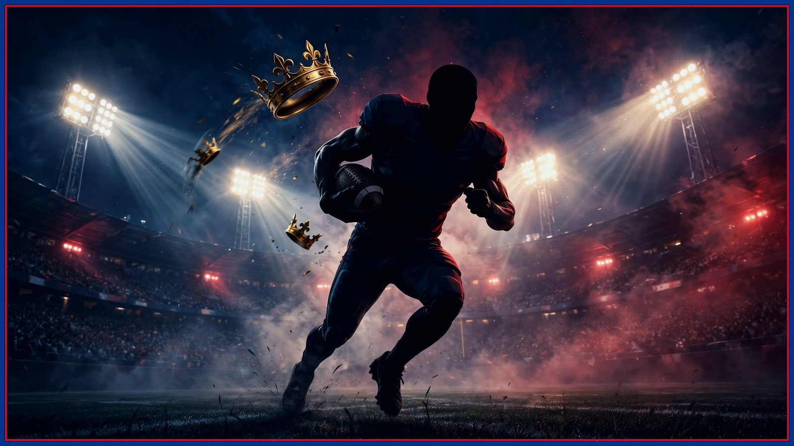

3 Reasons Derrick Henry Can't Hurt the Buffalo Bills
The history is scary — 102 yards a game and 11 touchdowns against Buffalo. The current form is not. Henry is limping into Sunday at 3.02 yards a carry over his last two, and the reasons go deeper than one slump.

Start with the respect, because the numbers earned it. Derrick Henry has averaged 102 rushing yards with 11 touchdowns in eight career meetings against Buffalo. That is not a matchup, that is a recurring nightmare, and every Bills fan old enough to remember those games can see the stiff-arm coming in their sleep. If Sunday were decided by history, this article would be a warning. It isn't, and it isn't.
Reason one: this is the coldest Henry has ever arrived. Over his last two games he has totaled 103 rushing yards at 3.02 yards a carry — barely half his career-meeting average against Buffalo, in two full games combined. His season average has fallen under 4.0 yards a carry for the first time, and he has gone three straight games without a rushing touchdown. Kings do not go three weeks without finding the end zone. Something is off, and it is showing up in every box score.
Reason two: the engine next to him is running at half power. Be honest about the caveat — Henry's quiet stretch coincided with Lamar Jackson being out, and defenses that don't have to honor Lamar's legs can load up on Henry. But Lamar's expected return Sunday comes with his own description of himself as restricted, on an ankle that has cost him three straight games since October 4. A pocket version of Lamar does not restore the read-option math that made Henry unstoppable. Buffalo's defense gets to play Henry straighter than any defense could when both men were healthy.
Reason three: Buffalo's run defense gets this test at home, off a bye, with two weeks to self-scout exactly this. Jim Leonhard's unit has heard all week that it ranks near the bottom of the league in yards allowed. What the yardage ranking hides is that this defense is built to rally and tackle in layers over long drives — and a 3.02-yards-a-carry back is exactly the kind of offense that has to string twelve plays together without a mistake to score. That is the game Buffalo wants to play.
Now the honest part, because this desk doesn't do propaganda. Ed Oliver has missed the last two games with a knee injury and his return is still in doubt — if he can't go, the interior of Buffalo's line is exactly where a desperate Henry would test first. Wednesday's practice report is the tell for both Oliver and Lamar, and if both trend the wrong way for Buffalo, this article gets a lot less comfortable. Check back here when it drops.
But as the week opens, the verdict stands: the scariest name on Baltimore's roster is bringing his worst form of the season into the building where Buffalo plays its best football. The crown is heavy. Lately, it has also been slipping. NOT THE KING — not on Sunday.
Watch the full breakdown on the Bills News Consolidated YouTube channel: https://www.youtube.com/watch?v=AD0biJL1yd8
The BNC Blitz is free: the day's Bills news, one stat that matters, and one take, every morning. Join to keep reading — and never miss the end of a story again.